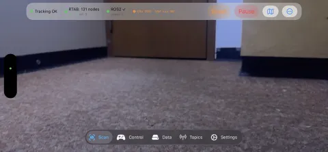
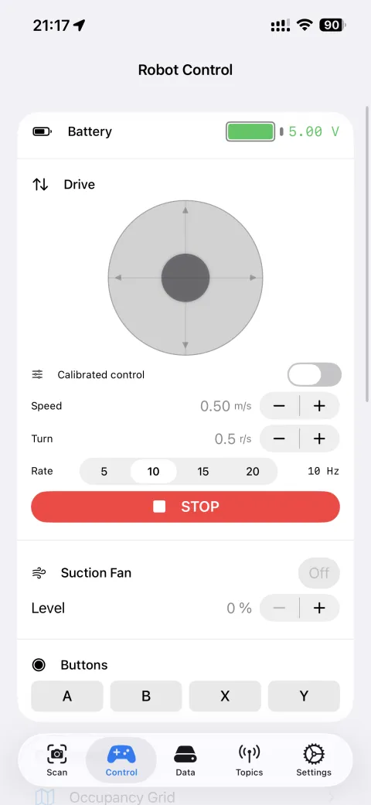
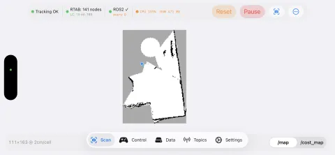
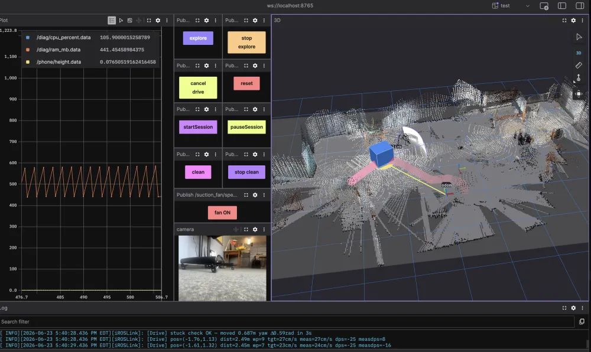

Drive & Calibrate¶
Phone on robot, network connected. Time to drive — then calibrate so the robot drives straight.
Prerequisites¶
- Robot built, ESP32 flashed, and app configured → Build & Configure
- Phone mounted landscape, camera facing forward → Build & Configure → Phone Mounting
Part 1 — Drive the Robot¶
1. Start SLAM¶
Go to the Scan tab → tap Start.
RTAB-Map builds the map incrementally as the robot moves. Loop closures trigger when the robot revisits a previous area and correct accumulated drift.

Lighting and texture matter
SLAM works best in well-lit rooms with visual texture (furniture, posters, varied surfaces). Plain white walls or dark corridors reduce loop closure frequency — the phone still tracks via ARKit VIO but drift accumulates.
2. Drive the robot¶
Autonomous IDD¶
Use the virtual joystick on the Control tab or a Bluetooth gamepad to control the robot.

ROS2 keyboard / gamepad teleop
→ ROS2 Teleoperation (Linux) — drive via teleop_twist_keyboard or a Linux gamepad
Advanced: goal-based navigation¶
Publish to /move_base_simple/goal (geometry_msgs/PoseStamped).
What you see in Foxglove
The 3D panel shows two overlapping data layers:
/map— occupancy grid: dark = obstacle, white = free space, gray = unknown (not yet mapped)- The robot's live pose as a TF arrow moving through the map
Set Display frame → map in the 3D panel settings so the map stays fixed while the robot moves.
If the robot appears to spin in place, the frame is set to odom or base_link — switch it to map.
In Autonomous IDD mode, colored rings around obstacles show the costmap inflation zone — the safety margin the path planner uses to avoid collisions.

3. Monitor in Foxglove¶
Connect Foxglove Studio to the built-in WebSocket server (address shown in Settings → Foxglove WebSocket Server), then add:
- 3D panel →
/tf,/odom,/map— live robot position and map - Image panel →
/camera/image_raw/compressed— camera view - Plot →
/diag/cpu_percent,/battery/voltage— health

4. Try Autonomous IDD¶
Once the map looks stable:
- Settings → Operating Mode → switch to Autonomous IDD
- Control tab → Actions
| Action | What it does |
|---|---|
| Explore | Autonomously navigates to unmapped frontiers until fully mapped or timeout |
| Calibrate | Three options for tuning the drive system |
Experimental features
Explore and motor calibration are still being improved. Results vary by environment and hardware. Use with care near fragile objects or drop-offs.
Want autonomous vacuuming?
→ Vacuum Robot demo — add a fan ESC and unlock Explore + Clean modes
The Control tab also shows a Map View with the occupancy grid and the robot's live position.
Part 2 — Calibrate¶
Autonomous IDD only
Calibration is only available — and only meaningful — in Autonomous IDD mode. The Sensor Bridge mode does not control motors.
Calibration teaches iROSLink how your specific motors behave: how much command value it takes to move, how fast the robot actually travels, and whether one side pulls harder than the other. Good calibration is the difference between a robot that drives straight and one that spins in circles.
When to calibrate¶
- First run with new hardware
- After replacing motors, wheels, or battery
- After firmware changes to the ESP32 motor controller
- When the robot consistently drifts or overshoots during autonomous navigation
Prerequisites¶
- SLAM is running — calibration reads actual robot velocity from SLAM odometry.
- Robot is on a flat, hard floor — carpet introduces noise into odometry readings.
- At least 1.5 m of clear space in front of the robot — it will drive in short bursts.
- ESP32 is connected and
/cmd_velis enabled in the Topics tab. - Battery is reasonably charged — low voltage changes motor behaviour and produces inaccurate results.
Automatic calibration¶
- Go to the Scan tab and start a SLAM session if not already running.
- Tap Actions → Calibrate.
- A countdown overlay appears:
- If SLAM is not running: "Starting SLAM in 3…" then "Calibrating in 5…"
- If SLAM is already running: "Calibrating in 5…"
- Stand back — the robot will move. Tap Cancel at any time during the countdown.
sequenceDiagram
participant App
participant Robot
participant SLAM
App->>Robot: cmd_vel linear=0.1, angular=0.0
Robot-->>SLAM: motion
SLAM-->>App: measured velocity (odom)
Note over App: compute calLinGain<br/>= actual speed ÷ cmd value
App->>Robot: slow ramp-up from 0→0.5
Robot-->>SLAM: motion starts at threshold
SLAM-->>App: first detected movement
Note over App: compute calLinDeadband<br/>= cmd at first movement
App->>Robot: straight runs at 3 speeds
SLAM-->>App: yaw drift per speed
Note over App: compute calYawDriftTrim<br/>+ calStraightBiasRate
App->>Robot: in-place rotation cmd
SLAM-->>App: measured yaw rate
Note over App: compute calAngGain<br/>+ calAngDeadbandThe full routine takes approximately 60–120 seconds depending on motor response time.
What gets measured¶
| Parameter | What it captures |
|---|---|
calLinGain |
cm/s of actual speed per unit of /cmd_vel linear value |
calLinDeadband |
Minimum /cmd_vel value that produces any movement |
calLinMinCmS |
Slowest reliable linear speed before the robot stalls |
calAngGain |
°/s of actual yaw rate per unit of /cmd_vel angular value |
calAngDeadband |
Minimum angular command that produces any rotation |
calYawDriftTrim |
Fixed yaw bias correction for straight-line driving |
calStraightBiasRate |
Speed-dependent yaw correction (stronger motor at higher speeds) |
Results are written to app storage immediately and apply to all future navigation. Check them in Control → Drive Calibration.
Manual fine-tuning¶
Go to Control tab → Drive Calibration for direct access to every parameter.
Use manual tuning when: - Auto-calibration results look wrong (e.g. gain is 0 or unrealistically high) - You want to adjust one parameter without re-running the full routine - The robot drifts slightly in one direction even after auto-calibration
The feed-forward formula:
If the robot overshoots goals: reduce calLinGain slightly.
If the robot barely moves: reduce calLinDeadband.
If it pulls left/right when driving straight: adjust calYawDriftTrim.
PI feedback (optional): Enable driveLinPIEnabled / driveAngPIEnabled in Drive Calibration. Start with Kp = 0.01, Ki = 0.001 and increase slowly. Too high Kp → oscillation; too high Ki → wind-up.
PI feedback requires stable odometry
If SLAM tracking is unreliable (jumpy pose), PI feedback amplifies the noise. Ensure tracking state is Normal before enabling PI.
Verifying calibration¶
- Drive forward in a straight line for ~1 m — the SLAM trace should be nearly straight.
- Drive in a square pattern — corners should be 90°.
- Watch drive state in the Scan tab: it should reach Arrived consistently at goals.
Troubleshooting¶
Map drifts and does not self-correct:
Check Settings → SLAM Debug. If loop closure hypothesis < 0.5, the environment may be too featureless. Add visual texture or reduce rtabVisMinInliers.
Robot drives but app does not receive /cmd_vel:
Confirm RMW_IMPLEMENTATION=rmw_zenoh_cpp is set on your ROS2 machine and the Zenoh router is reachable from both the phone and laptop.
Phone vibrates on the robot: Use a firm mount with no flex. Movement artifacts degrade odometry. See Phone Mounting.
Robot doesn't move during calibration: Verify ESP32 is connected (peer count ≥ 1) and the joystick produces movement before starting calibration.
Gain values look wrong after auto-calibration (gain = 0 or > 300): Auto-calibration relies on SLAM odometry. Bad results usually mean SLAM was unstable — ensure tracking state is Normal before re-running.
Full list → Troubleshooting
Next steps¶
→ Operating Modes reference — full mode details → App Stages & Lifecycle — visual guide to each phase